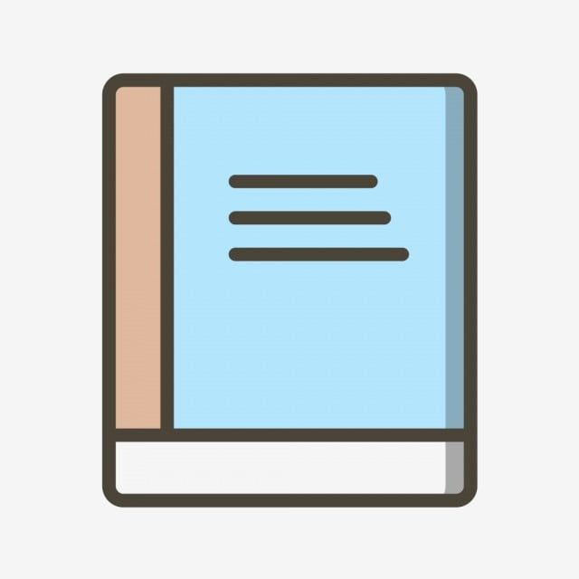

|
⋆ 𐙚 ̊.Selamat datang di halaman web milik Nara. ♡
|
 |
 Beranda ♡ Beranda ♡ |
Beranda adalah halaman utama dari situs web ini. Halaman ini
menyambut para pengunjung dengan sebuah pengantar singkat dan memberikan gambaran tentang isi
situs ini. Ibaratnya seperti pintu depan — sebuah sambutan hangat sebelum menjelajahi semua
yang ada di dalamnya.. |
 Profil Nara! 🌷 Profil Nara! 🌷 |
Profil memperkenalkan siapa diriku — hal-hal yang aku sukai dan tidak
sukai, hobiku, serta kegiatan sehari-hariku. Halaman ini membantu pengunjung mengenalku lebih
dekat melalui cerita dan refleksi pribadiku. |
 Album 📷 Album 📷 |
Album berisi kumpulan kenangan berharga milikku — mulai dari masa sekolah,
keluarga, dan teman-teman, hingga hal-hal yang aku sukai. Setiap album menceritakan kisah kecil
di balik foto-foto itu, penuh dengan emosi dan momen yang aku kenang dengan hangat. |
 Artikel 🕊️ Artikel 🕊️ |
Artikel adalah tempat di mana aku membagikan tulisanku — pemikiran, minat, dan
cerita pribadiku. Ini merupakan ruang untuk mengekspresikan diri dan membiarkan orang lain
melihat dunia dari sudut pandangku. |
| Buku Tamu 💖 |
Buku Tamu adalah ruang bagi para pengunjung untuk meninggalkan pesan, kesan, atau
salam untukku. Hal ini membuat situs webku terasa hangat dan interaktif, dipenuhi dengan
kata-kata baik dari mereka yang berkunjung. |